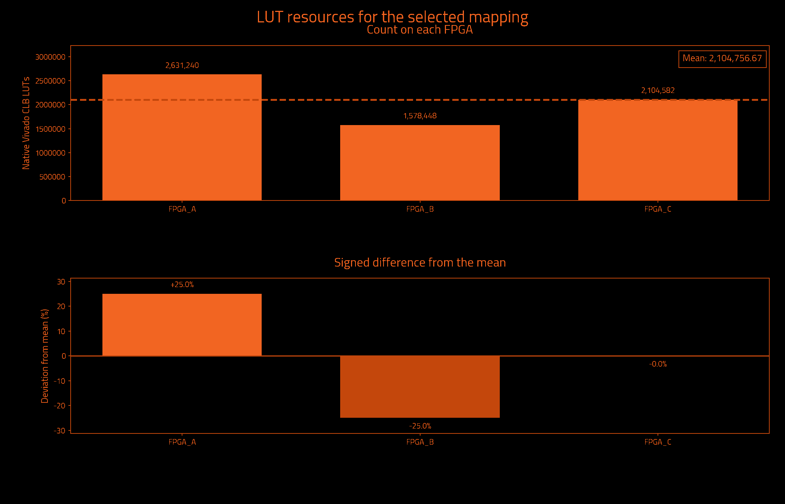
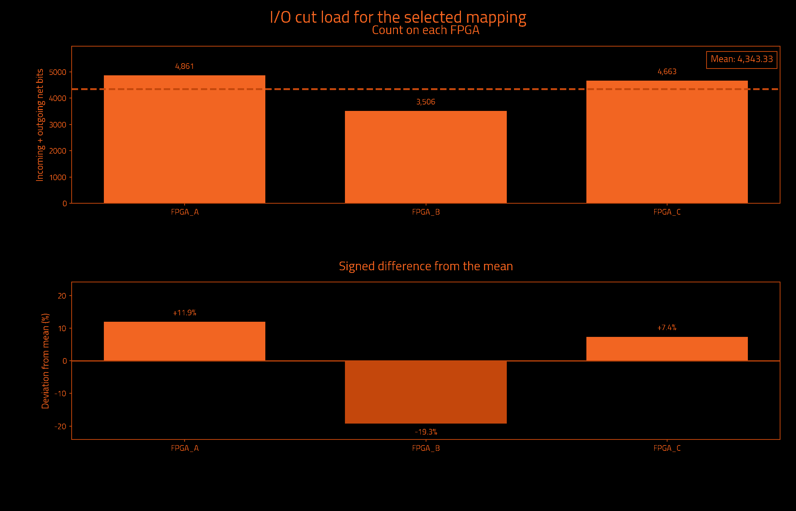
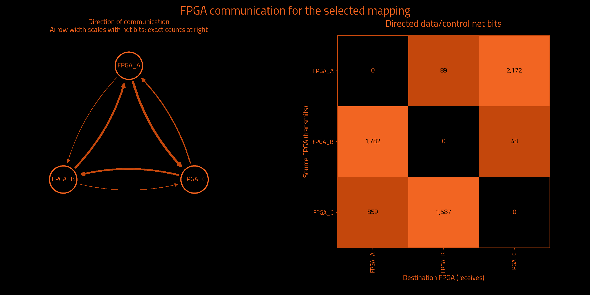

Historical measurements preserved by exact ownership equivalence · mapping.txt
Historical metrics preserved by exact ownership equivalence; not a fresh Vivado measurement.
| Selected partition | Result | Search | Result |
|---|---|---|---|
| FPGAs | 3 | Iterations requested | Unavailable |
| Native Vivado CLB LUTs | 6,314,270 | Iterations attempted | 3 |
| Unique data/control cut net bits | 6,493 | Selected iteration (zero-based) | 1 |
| Directed data/control net-bit pairs | 6,537 | Target board | j4.phd |
| Measurement | Result | Measurement | Result |
|---|---|---|---|
| Wall time | Unavailable | Observed CPU time | Unavailable |
| Average CPU cores | Unavailable | Average CPU use (one core = 100%) | Unavailable |
| Peak sampled process-tree memory | Unavailable | Frontend peak memory | Unavailable |
| Child processes observed | Unavailable | Sampling interval | Unavailable |
Measured through: Unavailable. CPU covers the frontend and observed descendants; sampling can miss short-lived work. Process-tree memory sums may count shared pages more than once.
No runtime measurement supplied.
Observed CPU time is a lower bound when short-lived processes escape sampling. Windows-host sampling excludes work inside WSL. Process-tree memory sums may count shared pages more than once.
| Logical FPGA | Native Vivado CLB LUTs | Device LUT utilization | Hard LUT cap | Outgoing net bits | Incoming net bits | Total I/O net bits |
|---|---|---|---|---|---|---|
| FPGA_A | 2,631,240 | 31.101% | 6,345,216 | 2,220 | 2,641 | 4,861 |
| FPGA_B | 1,578,448 | 18.657% | 6,345,216 | 1,830 | 1,676 | 3,506 |
| FPGA_C | 2,104,582 | 24.876% | 6,345,216 | 2,443 | 2,220 | 4,663 |
| Logical FPGA | Target device | Registers | Block RAM tiles | DSP blocks | UltraRAM blocks |
|---|---|---|---|---|---|
| FPGA_A | xcvp1902 | 1,579,106 | 660.0 | 2 | 0 |
| FPGA_B | xcvp1902 | 947,382 | 396.0 | 0 | 0 |
| FPGA_C | xcvp1902 | 1,263,176 | 528.0 | 0 | 0 |



| Measurement | Before local cleanup | Selected result |
|---|---|---|
| Worst minimum physical link hops without a register | 2 | 2 |
| Worst FPGA boundary crossings without a register | 2 | 2 |
| Extra crossings summed over modeled endpoints | 32 | 32 |
| Combinational primitives on transit paths | 1,296 | 720 |
| Directed hypergraph transfers | 6,452 | 6,452 |
| Sampled source timing paths scored | Unavailable | 1,000 |
| Weighted cost on sampled source timing paths | 0.0 | 0.0 |
| Signal category | Unique crossing net bits | Directed net-bit pairs |
|---|---|---|
| Data and functional synchronous control | 6,493 | 6,537 |
| Clock only | 1 | 2 |
| Reset only | 10 | 10 |
| Iteration | Result | Worst register-free crossings | Extra endpoint crossings | Transit primitives | Hypergraph transfers | Utilization imbalance |
|---|---|---|---|---|---|---|
| 0 | Not selected | 2 | 66 | 813 | 6,988 | 25.01% |
| 1 | Selected best accepted mapping | 2 | 32 | 720 | 6,452 | 25.01% |
| 2 | Rejected: Command failed (1); C:\Users\Wrelks\Desktop\upgrade_partitioner_handle_large_designs\work\final_j4_matrix_controller_v3\evidence\RISCV_MESH_3072_k3\installed_serial_default_20261014_329ddf1b\candidate_02\partition.log + Initialize LP Refiner = 3.93e-05 s + Label Propagation = 0.0391751 s + Initialize FM Refiner = 1.43e-05 s + FM = 0.406269 s + Initialize Data for Unc. FM = 0.0076467 s + Collect Bo… | Unavailable | Unavailable | Unavailable | Unavailable | Unavailable |
| Measurement | Meaning |
|---|---|
| Worst minimum physical link hops without a register | Lower bound from the declared topology, not a routed transport path. |
| Worst FPGA boundary crossings without a register | Largest ownership-change count on a modeled combinational path. |
| Extra crossings summed over modeled endpoints | Crossings beyond the first, summed over endpoints; not a distinct-net count. |
| Combinational primitives on transit paths | Logic that receives and forwards a remote signal without register capture. |
| Directed hypergraph transfers | Destination partitions beyond the first, summed over modeled hyperedges. |
| Sampled source timing paths scored | Exported Vivado timing samples, not all-path timing closure. |
| Weighted cost on sampled source timing paths | Relative ranking cost, not measured transport delay or DUT frequency. |
I/O cut load counts one outgoing multicast net once at its source and once at each receiving FPGA. Clock-only and reset-only nets are separate. Counts describe logical payload, not physical package pins or a pinmux ratio. External top-level ports have no invented FPGA home. Hypergraph transfers differ from the full net-bit census.
Deviation is 100 × (FPGA count / mean − 1); all-zero designs have 0% deviation. Device utilization and hard LUT caps are separate. Before local cleanup means this selected candidate before refinement, not necessarily the first iteration. More iterations can improve a result; the best accepted candidate is retained.
Timing sample coverage: exported sampled native setup paths only; not all-path STA. Path model: primitive conservative data arcs; top IO has no FPGA home. These are source-model measurements, not achieved hardware timing.
| Logical FPGA | Physical location | Selected direct neighbors |
|---|---|---|
| FPGA_A | C01/S01/E | 2 |
| FPGA_B | C01/S01/F | 2 |
| FPGA_C | C01/S01/G | 2 |
| FPGA | Neighbor | Declared lanes | Wires at topology minimum compression |
|---|---|---|---|
| FPGA_A | FPGA_B | 16 | 1,024 |
| FPGA_A | FPGA_C | 16 | 1,024 |
| FPGA_B | FPGA_C | 16 | 1,024 |
The communication matrix shows signal demand. Declared links guide optimization; transport routing and physical bandwidth allocation happen later.
Resources describe original synthesized logic; future wrapper and transport resources are excluded. Mapping format, ownership and hard capacity checks are acceptance gates. Downstream regroup and hardware validation are separate.
{
"status": "HISTORICAL_METRICS_PRESERVED_BY_EXACT_OWNERSHIP_EQUIVALENCE",
"backend_version": "1.6.2",
"partition_preset_requested": "default",
"frontend_sha256": "d4dd69ef7849e0e5770e1ea0173f2106b1f1ec13ccc9303f7e8eaf9f3bc7237c",
"native_timeout_seconds": 7200.0,
"native_timeout_scope": "persistent checkpoint startup and each resource request; batch commands unaffected",
"topology_sha256": "283769d8f5d4bbfe2299e491c060893fc11b71e6fc2b0aac29338e97ec45ac53",
"topology_source_sha256": "6f393e7eee76cbf20cd96e46f52c8c0a34be2365c7222aa6cf7abfe87c7e1b83",
"fpga_count": 3,
"native_backend_invoked": true,
"preferred_native_balance": 0.2,
"selection_policy_version": 3,
"native_balance_absolute_tolerance": 1e-12,
"effective_solver_epsilon": 0.3,
"effective_refiner_scalar_balance": 0.3,
"native_balance_search_envelope": 0.3,
"target_capacity_dependency_manifest_sha256": "18a3ac71857350176b8d15449e6cf21f106a9c902bd439a5a7d9d722c218d2c3",
"target_capacity_dependencies_sha256": {
"C:\\Users\\Wrelks\\Desktop\\upgrade_partitioner_handle_large_designs\\RapidWright\\scripts\\partition\\target_capacity.py": "652db231c4c19cfb2aa7bea140c1184d6f51162be857358b94152b3a2661f992",
"C:\\Users\\Wrelks\\Desktop\\upgrade_partitioner_handle_large_designs\\topologies\\j4_board_topology.json": "6f393e7eee76cbf20cd96e46f52c8c0a34be2365c7222aa6cf7abfe87c7e1b83",
"C:\\Users\\Wrelks\\Desktop\\upgrade_partitioner_handle_large_designs\\topologies\\j4_board_topology.json.targets.json": "25db82ebe61166d1d1998042eaa07ad9c843238119e5dd6e16e70695249afcd4",
"C:\\Users\\Wrelks\\Desktop\\upgrade_partitioner_handle_large_designs\\RapidWright\\scripts\\partition\\part_catalog\\vivado_2025_1_parts.tsv": "a402de944fbd660743f6a7ff12403060e886627439826186600da78618e6a1fe",
"C:\\Users\\Wrelks\\Desktop\\upgrade_partitioner_handle_large_designs\\RapidWright\\scripts\\partition\\part_catalog\\vivado_2025_1_parts.tsv.identity.json": "c5937f61bb02a289745eee9e8cc359b56692ed908e206cf549830da035957707"
},
"effective_logical_balance": 0.5,
"logical_balance_policy": "automatic_uniform_or_unspecified_native_caps",
"logical_balance_requested": null,
"logical_resource_capacities_explicit": false,
"engine_manifest_sha256": "b64272b8c469cffdf98ea76b1afcae5799a0fa0bc63d855ece820af18d841f8a",
"source_pair_association": {
"version": 1,
"mode": "supplied_manifest_legacy",
"original_receipt": "C:\\Users\\Wrelks\\Desktop\\upgrade_partitioner_handle_large_designs\\LSUT_2\\work\\partition_experiment\\picorv32_mesh_3072_reference\\export_receipt.json",
"receipt_snapshot": "C:\\Users\\Wrelks\\Desktop\\upgrade_partitioner_handle_large_designs\\work\\final_j4_matrix_controller_v3\\evidence\\RISCV_MESH_3072_k3\\installed_serial_default_20261014_329ddf1b\\inputs\\source_pair_receipt.json",
"original_receipt_sha256": "8223991b6b484b8acb0c047c905e3cabd8e659da6eee5449f608d37274620465",
"receipt_snapshot_sha256": "8223991b6b484b8acb0c047c905e3cabd8e659da6eee5449f608d37274620465",
"input_edif": "C:\\Users\\Wrelks\\Desktop\\upgrade_partitioner_handle_large_designs\\LSUT_2\\work\\partition_experiment\\picorv32_mesh_3072_reference\\post_synth.edf",
"input_edif_sha256": "3a00511672cb0d14f0d48a2998c81825eda8ae8870c5a097695a9a33932c1fda",
"checkpoint": "C:\\Users\\Wrelks\\Desktop\\upgrade_partitioner_handle_large_designs\\LSUT_2\\work\\picorv32_mesh\\config_4x3_16x16_m512\\vivado_xcu250-figd2104-2-e\\array_assembled.dcp",
"checkpoint_sha256": "5499f6380f77fdf96f31a10138fbe04398808a6664d8c4faefa160506079f7ac",
"native_primitives": "C:\\Users\\Wrelks\\Desktop\\upgrade_partitioner_handle_large_designs\\LSUT_2\\work\\partition_experiment\\picorv32_mesh_3072_reference\\leaf_primitives.tsv",
"native_primitives_sha256": "5f8ac3b71edf4ecb34d3a1619a5ce4a188f30ef04a92fb9b9ad0052417c429fd",
"producer_evidence_verified": false,
"export_run_association": "Supplied PASS manifest asserts one export association; producer command, actual native exit0 and completion are not verified",
"scope": "Exact payload and receipt-byte consistency; no arbitrary EDIF/checkpoint electrical-equivalence or cryptographic-authenticity proof"
},
"source_pair_provenance_sha256": "5c4d3caf0f80d8720a3608bae5f215a2fbbf91c125e21f858bda4c1e7bebaa04",
"java_heap": "56G",
"expanded_native_leaf_count": 11462353,
"timing_guidance": "sampled_source_STA",
"timing_paths_sha256": "e2fc3770413cf5fe9755cc1a72a5580ea85472a4f0be27abe45d25cd11cfac98",
"extra_delay_ns_per_crossing": null,
"native_artifact_storage": "verified_lossless_compression",
"native_oracle_mode": "persistent_original_checkpoint",
"native_residency_policy": "Probe after Java; retain only when measured available RAM covers the next heap, 8 GiB overhead and a prior-HGR native solver reserve",
"native_residency_decisions": [
{
"iteration": 0,
"stage": "after_java",
"available_bytes": 111917953024,
"decision": "load_native_probe"
},
{
"iteration": 1,
"stage": "before_java",
"available_bytes": 79019266048,
"prior_hgr_bytes": 13779873,
"native_solver_reserve_bytes": 2588439584,
"decision": "retain"
},
{
"iteration": 2,
"stage": "before_java",
"available_bytes": 79821557760,
"prior_hgr_bytes": 13898869,
"native_solver_reserve_bytes": 2592247456,
"decision": "retain"
}
],
"native_oracle_scripts_sha256": {
"C:\\Users\\Wrelks\\Desktop\\upgrade_partitioner_handle_large_designs\\RapidWright\\tools\\native_resource_session.py": "caa467021ca9a907b233f52d086d2a5858b08111ba950b718273964f36bd0ca5",
"C:\\Users\\Wrelks\\Desktop\\upgrade_partitioner_handle_large_designs\\RapidWright\\tools\\resource_session.tcl": "dc660b593517075ee79bc42487cdeff95b075cc8f1fc1edbd041e05d9ba17d2a",
"C:\\Users\\Wrelks\\Desktop\\upgrade_partitioner_handle_large_designs\\RapidWright\\tools\\report_partition_resources.tcl": "255ddb495ba953f77a19a373481cbfbde7ca2f127c6f595764b2a101a817ef38",
"C:\\Users\\Wrelks\\Desktop\\upgrade_partitioner_handle_large_designs\\RapidWright\\tools\\archive_native_request.py": "1053024a0794942eeb12bcdd77827541220f05d7355089f8113cac90f42eeb6b"
},
"capture_cohort_cleanup": {
"requested": "off",
"effective": "off",
"backend_supported": true,
"reason": "requested_off"
},
"native_feedback_quality_guard": "accepted_mapping_anchor",
"quality_guard_policy": "ranked",
"minimum_link_hop_analysis_available": true,
"selected_iteration": 1,
"native_cap_check": "PASS",
"native_balance_target_met": false,
"preferred_native_balance_target_met": false,
"native_search_envelope_met": true,
"new_policy_complete_within_search_envelope": true,
"source_input": "C:\\Users\\Wrelks\\Desktop\\upgrade_partitioner_handle_large_designs\\LSUT_2\\work\\partition_experiment\\picorv32_mesh_3072_reference\\post_synth.edf",
"source_sha256": "3a00511672cb0d14f0d48a2998c81825eda8ae8870c5a097695a9a33932c1fda",
"checkpoint_sha256": "5499f6380f77fdf96f31a10138fbe04398808a6664d8c4faefa160506079f7ac",
"native_inventory_sha256": "5f8ac3b71edf4ecb34d3a1619a5ce4a188f30ef04a92fb9b9ad0052417c429fd",
"hard_native_clb_lut_caps": {
"FPGA_A": 6345216,
"FPGA_B": 6345216,
"FPGA_C": 6345216
},
"selection_policy": "Hard capacities and one cut/topology budget; complete paths; worst minimum-link hop lower bound, logical register-free crossings, sampled source timing cost, endpoint excess, transit; native search-envelope limitation tier, transfers, topology cost, then fine balance; preferred balance remains soft",
"minimum_link_hop_scope": "Declared selected adjacency shortest-link lower bounds; not actual transport routing, congestion or nanoseconds",
"scope": "Original synthesized netlist subset utilization; no future wrapper/transport resources included",
"accepted_mapping_sha256": "057521ae583649551cb9a0b7fdaa7c24c42691f9f585376d405f58d3e0fff2ef",
"historical_metrics_scope": "Original native and source-graph measurements preserved by exact ownership equivalence; not rerun"
}{
"vivado_resources.tsv": "2da8bd59e71d13fbd7a459aad18ccbd29751786f3402ef9b80f9027cd36bca76",
"lut_report.txt": "344ec85c256edebc3a1be1d2c0f3897a75c9f28016f39babc98ef26d7976e9d3",
"fpga_control_categories.tsv": "c66c3e55b4d36f5c51e2bd8fdedcb92f0ba9820e35c640cd832d3538b6a89a9a",
"hardware_quality.txt": "62152460c6d3d98f6ff20a3e31e2666f32ce1317cf310c03bacf361160302a42",
"run_provenance.json": "df8284ddacd34c87edcf4d29218cdfe508a038e3879f7ae8b91eeac84b644448",
"target_capacity.json": "60dfc96f5cab79d10160597eaf2fed946106dc47dd7043af581ee4467ec85c12",
"native_lut_caps.tsv": "a64e1c8451f28169723da0fb55136b346831c92024ed6d4e8200334a73b2a63d",
"cells.txt": "5cfe9781ac2b8c95a631ae49d33f3f6fdbc8c06b4040df71d9a995710da55a3b",
"topology_manifest.json": "3e1a64ae85d44a24bdacdc9c4f5cf37c3e140c6496e6110210ee78f73af50d7d"
}{
"status": "HISTORICAL_METRICS_PRESERVED_BY_EXACT_OWNERSHIP_EQUIVALENCE",
"fresh_native_measurement": false,
"historical_mapping_sha256": "93fce6c9f77e7e39199a8a74b40d98132d9299545ac29f6be7c6149eda4dcb45",
"successor_mapping_sha256": "057521ae583649551cb9a0b7fdaa7c24c42691f9f585376d405f58d3e0fff2ef",
"functional_leaves_compared": 11179638,
"ownership_mismatches": 0,
"top_port_owner_unchanged": true,
"source_edif_sha256": "3a00511672cb0d14f0d48a2998c81825eda8ae8870c5a097695a9a33932c1fda",
"source_checkpoint_sha256": "5499f6380f77fdf96f31a10138fbe04398808a6664d8c4faefa160506079f7ac",
"proof_files_sha256": {
"prior_native_evidence.json": "b1c09c96efa5093a2da67cf038742c22c065f7e0d1c10390859a7301ce4d3a4a",
"reencoding_equivalence.json": "5bfb3b5dd42efcf571e5144cdce4e40cd1059b2bde65779f2e3af099dd72931b",
"mapping_contract.json": "6a56f8adbadc657c6519f6628648b31d1ec801f1426b7cd8bff69a1793af1f16",
"mapping_records.tsv": "0527061594dc589df5b11ca2e7fe9d94a3d8e319940178148bff433b6fd77a07",
"mapping_ownership.tsv.gz": "9724310278b7d95b5739bbde5b936c3e7dd1092bb41b06541f9a702558cd5086"
},
"historical_artifact_sha256": {
"cells.txt": "5cfe9781ac2b8c95a631ae49d33f3f6fdbc8c06b4040df71d9a995710da55a3b",
"endpoint_kind_diagnostic.tsv": "2ef52ba97142b073c4d3ee6f16a9da5daa699f008371f8328b3c526e0a9b0d55",
"final_assignment.part": "432bb0e826da68c1ffb4f91011818cfa34f91f28d6cb626d26151a54496e0660",
"fpga_control_categories.tsv": "c66c3e55b4d36f5c51e2bd8fdedcb92f0ba9820e35c640cd832d3538b6a89a9a",
"fpga_devices.tsv": "6c7187bec6802b2f569f8cf274073a1720353c74c8b176c7e72ae2159b9e5183",
"fpga_io_cuts.txt": "c201259140f35cccd5c6d2cec77e04154d07e3eb737e6c37cf0da8c1e7f88ea7",
"fpga_net_crossings.tsv": "76a6f8a1c9e2575518145e448b79ade08a1c690223e60e3a09bfda95a89f9135",
"hardware_quality.txt": "62152460c6d3d98f6ff20a3e31e2666f32ce1317cf310c03bacf361160302a42",
"identity.json": "fb7c28523b9ebdfd07aedcc799c84a470801884c47a621252469caf259afcc3b",
"io_cuts.txt": "44939466ae42de82174ca611da70d17c8d068bb821c6c80bf6d91e7e6adaf8fa",
"logical_lut_report.txt": "020b386c4a393e7077cc6f718caaa29478006e1ba8d410028a2534aea9dfddfd",
"logical_resources.tsv": "92b9f42530c78b25d11e2060b06b265cff289cbb3c5d66bcf3ebf08bbcb65451",
"lut_report.txt": "344ec85c256edebc3a1be1d2c0f3897a75c9f28016f39babc98ef26d7976e9d3",
"mapping.txt": "93fce6c9f77e7e39199a8a74b40d98132d9299545ac29f6be7c6149eda4dcb45",
"metric_definitions.txt": "28c1e87b6c622b819cb9908f3ad9f58277331314f7be645e2b80c10d99238ba8",
"native_candidates.tsv": "05a4814f5caa740ca1f4a32874871f400e253dd56bba1df1a44558ef92d7a976",
"native_complete.txt": "e48491d23c4772b922ee0ce678a55d93d21ee0fa8f0d01ff57f2884aaa0d81a7",
"native_lut_caps.tsv": "a64e1c8451f28169723da0fb55136b346831c92024ed6d4e8200334a73b2a63d",
"parity_audit_final/00_parity_report.json": "593b40915c6dbae5997e0412f79b5d9231a1ebc45a1229f91a9ae79f178bd785",
"parity_audit_final/01_completion_receipt.json": "52f3e4f8f0fdd334424235a8c8261b30c03e32e90f3709b3dc0fd8f885a1c96e",
"parity_audit_final/02_root_m_e1.json": "cd1b0cb3981a77c67c8ca8e1f4ac28482412d5dad0d788ae2cef62a061eafa0f",
"parity_audit_final/03_metadata_receipt.json": "baca83efacb68e278308ddde5ee02b3582097bc6dbbd48e38f73ae596d81d113",
"parity_audit_final/04_native_receipt.json": "b2a12c8b67e39d4aefbcc60ae6be198322c463707298adddc3a84f70d30f38ef",
"parity_audit_final/05_prepared_plan.json": "72cc2ff5e8ed0422b6f8d75aed1dd39e0614a4f7d98e5d8f76cc6d46776c227a",
"parity_audit_final/06_boundary_complete.txt": "6f23d113cba7ef7bffe72bc66a1836b3530bff3c4009494d87e4346c45dabcd8",
"parity_audit_final/compact_mapping_audit.json": "69953e96b18dc2524233dcce9780d2779cd16ac8684f8441fbdd704fbd0ed2b5",
"parity_audit_final/identity_receipt.json": "a1b1949ff4d845b2cda1adcd028d783a1cb143e3f4d2d8792edd91bc97525399",
"primitive_counts.tsv": "a57652336e8fb49eb0ee2f3d54fd0de8cdf3bf7fd9eedcd109c49653c95e7188",
"QUALIFICATION.json": "e37d9747374ee7cef03fe5cb53e60c3857ca03aeb0338e7614471b8cd9d185eb",
"refinement_passes.tsv": "49dbbe613aaa09b8f5e53a399cd4656976532da5f0b52596474758bda2c255be",
"run_provenance.json": "df8284ddacd34c87edcf4d29218cdfe508a038e3879f7ae8b91eeac84b644448",
"source_mapping.txt": "93fce6c9f77e7e39199a8a74b40d98132d9299545ac29f6be7c6149eda4dcb45",
"STATUS.json": "ae1cdcc660a3741fa6f6b2f15e077d12b6c7fb6738fb5dd6da10c1552a71dce7",
"swap_refinement_passes.tsv": "f7789eae0deb7841b203a77f1ebebf80a4fbfeb92099cf832c7dbdcf723911be",
"target_capacity.json": "60dfc96f5cab79d10160597eaf2fed946106dc47dd7043af581ee4467ec85c12",
"target_capacity_dependency_manifest.json": "18a3ac71857350176b8d15449e6cf21f106a9c902bd439a5a7d9d722c218d2c3",
"topology_manifest.json": "3e1a64ae85d44a24bdacdc9c4f5cf37c3e140c6496e6110210ee78f73af50d7d",
"vivado_resource_summary.txt": "9f35717f72f5868e7f5ce0c18e4f517bfba561ba02ab53210e5b4d82091d7f0e",
"vivado_resources.tsv": "2da8bd59e71d13fbd7a459aad18ccbd29751786f3402ef9b80f9027cd36bca76",
"worst_combinational_path.tsv": "40fc9c1979dea4fa5d68cf8f228950975c5e2bd5fdee30f3e933d803a3855d3d"
},
"historical_metrics_directory": "C:\\Users\\Wrelks\\Desktop\\upgrade_partitioner_handle_large_designs\\RESULTS FOR J4\\RISCV_MESH_3072\\3 FPGAS",
"scope": "Historical source-netlist resource and connectivity measurements preserved by checked exact functional ownership and top-port owner equivalence; no new Vivado, regroup, wrapper or hardware validation"
}